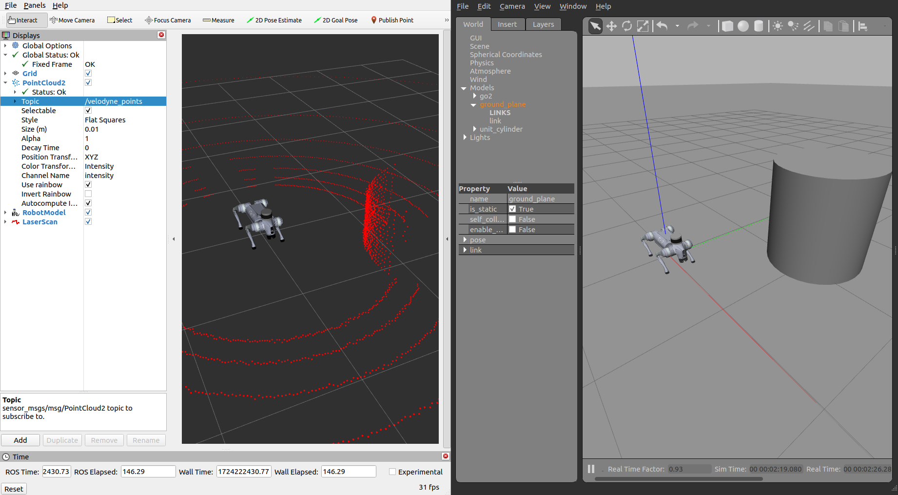

第 13 章 升级动机与仿真环境搭建¶
第 12 章我们已经让 Go2 在实机上跑通了 L1 + 2D Nav2 基线。但如果你还记得章末那张“能走但有限”的清单,就会发现一个残酷事实:继续在这条链上硬抠参数,大概率只会越调越累。这一章,我们先把“为什么要换路”讲透,再把一套能走能扫的 Gazebo 仿真基础盘搭起来,给下一章真正的 3D 升级做准备。
本章你将学到¶
- 用真实实验数据说明:为什么 Go2 的 L1 + 实机 3D LIO 这条路,不是“再调一调就能救回来”
- 看懂 L1 的四个关键限制:步态 IMU 噪声、坐标系问题、稀疏单环点云、扩展坞官方支持范围
- 比较 Gazebo Classic、Gazebo Gz、Isaac Sim、Webots 这几条仿真路线,理解为什么本书先选 Gazebo Classic
- 在
go2_sim_ws里搭起 unitree-go2-ros2 + CHAMP + VLP-16 这一套仿真底座 - 识别 8 个真正容易把人卡住的坑,避免把一周时间浪费在路径、DDS、控制器时序和传感器插件上
背景与原理¶
引子:为什么第 12 章不是终点¶
如果只看阶段性成果,第 11 章和第 12 章其实已经很像“胜利前夜”了:
- 第 11 章我们有了 2D 地图
- 第 12 章我们看到了 Go2 能自己走到目标点
但我当时很快就发现,这条路线有一个非常难受的现实:
我们想要的不是“平地里慢慢到点”,而是后面那条完整任务链:自主导航、感知、识别、再去放置。
一旦目标变成这个级别,2D 基线就只是起点,不是终点。
更糟的是,我最开始以为“再把 L1 接到 3D LIO 上,事情就自然升级了”。结果后面的几轮实验基本把这个幻想打碎了。
第一部分:L1 为什么升不动¶
这一节不是为了贬低 L1,而是为了把边界讲清楚。讲清楚边界,后面的换路才不是拍脑袋。
硬伤 1:步态 IMU 噪声淹没了真实运动¶
Point-LIO 在 Go2 上最迷惑人的地方是:
- 静止时很好看
- 一走起来就崩
实验里最稳定的一次结果是:
- 机器人静止时,建图精度可以压到 ±2 cm
- 一旦开始行走,点云会穿透墙体、旧信息丢失、位姿估计直接发散
我当时最先怀疑的是“是不是 IMU 太吵,低通滤波一下就好了”。结果实验数据很无情:
| 方案 | 截止频率 | 结果 |
|---|---|---|
| 一阶低通滤波 | 1 Hz |
静止还行,旋转时位置飘到 -98 m |
| 一阶低通滤波 | 3 Hz |
启动就炸,z 直接飘到 -557 m |
这组数字很值钱,因为它直接说明了一个工程事实:
Go2 步态振动的频段,和机器人真实运动引起的有效加速度变化频段,高度重叠。
也就是说:
- 你把滤波器调狠了,步态噪声是少了,但真实运动信号也一起被你削掉了
- 你把滤波器调松了,有效信号是保住了,步态噪声又原封不动灌进去了
这不是“参数还没调到位”,而是线性滤波在这个场景里的能力边界。
硬伤 2:L1 IMU 坐标系问题不是普通的小偏差¶
第二个坑比“IMU 很吵”更阴。
按官方 L1 手册的定义:
- IMU 坐标系和 LiDAR 坐标系是平行对齐的
+Z指向上方
但真正装到 Go2 身上之后,事情就没这么简单了。
一方面,Go2 上的 L1 是倒装的;另一方面,我在实测里又发现:
- 直接照搬 CMU 开源项目里的
negate Y/Z + 15.1°变换,重力方向会偏掉将近 30° - 进一步拆开看,加速度和角速度的坐标约定甚至不像是同一套“简单轴翻转”关系
也就是说,这里不是一个“差个 5° 再微调一下”的问题,而是传感器契约本身就不够规整。
来自宇树的回复
我当时把问题提给了宇树技术支持,拿到的几个关键信息如下:
- L1 安装外参给到的是
xyzrpy = [0.28945, 0, -0.046825, 0, 2.8782, 0] - 官方给过一个
point_lio_unilidar仓库,但它是 ROS1 Noetic 方案,不是 Go2 ROS2 直接可抄的成品 slam_operate这套导航接口只支持 MID-360 和 XT-16, L1 不支持- 机器人里的
uslam主要是 App 侧功能,不提供这条开发链可直接接入的开放接口
这个回复其实非常关键。因为它帮我们确认了:
- 你不是“姿势没找对”
- 而是官方支持范围本来就不包括“L1 直接走这条开发链”
硬伤 3:ring = 1 的稀疏点云,只够做 2D 基线¶
第 10 章我们已经看过 L1 的点云性格了:
- 单帧大约
4193 ~ 4194点 - 发布频率大约
10 Hz ring字段实测基本全是1
这种点云当然不是“完全不能用”。第 11 章和第 12 章已经证明了:
- 把它压成
/scan,做 2D SLAM 和 2D Nav2 是能跑的
但问题在于,3D LIO 对点云的要求比“能压成一圈二维扫描”高得多。
至少在我当时验证的这几条路上:
KISS-ICP会嫌点云几何特征太稀Point-LIO会越来越依赖 IMU,而 IMU 又刚好是最不稳的那环- 依赖更强结构特征或稳定逐点时间的 3D LIO/回环方案,会更加难受
所以这里别把“L1 能输出 PointCloud2”误听成“L1 天然适合做 3D LIO 前端”。
硬伤 4:扩展坞这条官方链,本来就没把 L1 放进来¶
根据第 4 周那轮官方文档调研,以及后面自己查 graph_pid_ws 的结果:
- 官方 SLAM 导航文档默认前提是 EDU + 扩展坞 + 官方购入激光雷达
- 支持口径明确写的是 MID-360 或 XT-16
- 扩展坞那套预装链路里,雷达 IP、驱动脚本和
lio_sam配置也都是围着它们写的
比如当时已经能确认的事实就包括:
- 雷达默认 IP 直指
192.168.123.20 mid360_lidar.sh调的就是livox_ros_driver2lio_sam相关配置是sensor: livox,N_SCAN: 4
这意味着什么?
意味着就算你愿意继续为 L1 坐标系和 IMU 数据硬啃,扩展坞那条官方“教育版 SLAM 导航主线”也并没有在前方等你。
此路不通
到这里,我们其实已经能下结论了:
- 步态 IMU 噪声 不是调一两个滤波参数能救的
- IMU 坐标系问题 不是普通的“小偏差”,而是传感器契约不够规整
- L1 稀疏单环点云 足够做 2D 基线,但并不适合作为这条 3D LIO 升级链的稳定前端
- 扩展坞官方支持 本来就站在 MID-360 / XT-16 这边,不站在 L1 这边
所以第 12 章之后最理性的决定,不是继续在实机 L1 上死磕 3D,而是先把算法链放到一个传感器契约更干净的地方跑通。
第二部分:为什么先去仿真¶
我当时最终切到仿真,不是因为“仿真更高级”,恰恰相反,是因为它更朴素:
- IMU 数据更干净
- 雷达模型更标准
- 外参、TF、控制链都更容易穷举排查
- 场景可控,出了问题能快速复现
这类转向最容易被误会成“逃避实机”,其实不是。
真正合理的顺序是:
- 先在仿真里把 算法和工程链 跑通
- 再带着一套已经验证过的系统回到实机
- 最后决定值不值得采购更适合的传感器,比如 MID-360
这比一边踩 L1 的硬件坑,一边还想同时调 3D 算法,要省时间得多。
第三部分:仿真方案怎么选¶
先比仿真器¶
这一步我没有追求“最强”,而是优先看 ROS2 Humble 生态 和 四足现成例子。
| 方案 | 学习曲线 | ROS2 Humble 生态 | 四足现成示例 | 这一章是否推荐 |
|---|---|---|---|---|
| Gazebo Classic | 低到中 | 最成熟 | 有 CHAMP + Velodyne 现成链路 | 推荐 |
| Gazebo Gz | 中 | 新,但迁移成本高 | 有,但资料分散 | 暂不选 |
| Isaac Sim | 高 | 很强,但偏重 GPU 和生态整合 | 有,但更适合后期 | 暂不选 |
| Webots | 低到中 | 够用 | 四足案例少 | 暂不选 |
如果你现在的目标是“先把 Go2 在仿真里走起来,再让它能扫、能给下一章上 3D SLAM”,Gazebo Classic 是最省心的选择。
再比控制框架¶
控制层我最后也做过取舍。
| 方案 | 优点 | 缺点 | 结论 |
|---|---|---|---|
| 直接走 Go2 SDK 仿真链 | 接口更像实机 | 现成示例分散,对 URDF/传感器改造不友好 | 暂不选 |
| CHAMP | 四足步态框架成熟,ROS2/Gazebo 资料多,能直接接 cmd_vel |
不是 Unitree 官方控制栈 | 选它 |
本书这一套教程里,CHAMP 的价值非常直接:
- 它不是最终产品
- 但它非常适合搭一块“能走、能看、能接传感器、能继续接 SLAM/Nav2”的实验底板
最后比雷达模型¶
这一步最容易想当然。
如果只考虑“以后可能买 MID-360”,你会本能地想直接模拟 MID-360。但我当时最后先选的是 VLP-16。
原因有三个:
- Gazebo 现成插件和资料最多
- 输出是标准的
PointCloud2多环点云,更容易接通后续 3D 算法链 /velodyne_points这条话题在 ROS 生态里几乎是“默认公约”,很多现成配置直接就能吃
不过这里要诚实说一句:
VLP-16 也不是完美答案
它解决的是“先把多环点云 + 标准 TF + 可控仿真场景搭起来”这件事,不是一步到位解决所有 3D SLAM 细节。比如我后来在第 14 章的联调里就发现,某些 Gazebo VLP-16 插件对逐点 time 字段的实现并不理想。这不影响本章把基础盘搭起来,但你别把它误会成“仿真里就没有坑了”。
本书这一章的最终选型¶
所以这章的结论很明确:
Gazebo Classic + CHAMP + VLP-16
原因可以压缩成三句话:
- Gazebo Classic:最稳,和 ROS2 Humble 配合成熟
- CHAMP:最省时间地把 Go2 变成“能走的四足机器人”
- VLP-16:最容易先给下一章准备一份像样的 3D 点云输入
架构总览¶
仿真基础盘的数据流¶
本章我们先不急着接 Fast-LIO,也不急着接 Nav2。先把一块“能走能扫”的底板搭牢。
flowchart LR
A[Gazebo World<br/>indoor.world] --> B[spawn_entity]
B --> C[Go2 Robot Model<br/>robot_VLP.xacro]
C --> D[gazebo_ros2_control]
D --> E[controller_manager]
E --> F[joint_states_controller]
E --> G[joint_group_effort_controller]
H[champ_teleop / 键盘输入] --> I["/cmd_vel"]
I --> J[quadruped_controller_node]
J --> G
C --> K["/imu/data"]
C --> L["/velodyne_points"]
C --> M["/joint_states"]
C --> N["/odom + TF"]
K --> O[RViz]
L --> O
M --> O
N --> O
K --> P[第 14 章 3D SLAM]
L --> P仿真里这几个包分别干什么¶
为了后面不被目录绕晕,你先记住这一层分工:
unitree-go2-ros2/
├── champ/ ← 四足控制框架本体
│ ├── champ_base/
│ ├── champ_bringup/
│ ├── champ_gazebo/
│ └── champ_description/
├── robots/descriptions/go2_description/
│ └── xacro/ ← Go2 模型和传感器挂载
├── robots/configs/go2_config/
│ ├── launch/ ← Gazebo / RViz / 后续导航入口
│ ├── worlds/ ← 仿真世界
│ └── rviz/ ← RViz 配置
└── champ_teleop/ ← 键盘遥控
这套结构的好处是:
- 机器人模型和传感器在
go2_description - 世界、launch 和 RViz 在
go2_config - 步态控制和状态估计在
champ/*
后面你查问题时,知道该去哪一层下手。
一个必须先说的坐标系提醒¶
第 12 章实机链路里,我们一直强调 Go2 用的是 base。但这一章的仿真链不是那套驱动,它的根 link 叫的是:
base_link
所以请你现在先把这条规则记住:
- 实机章节跟 Go2 原生驱动时,优先认
base - 这一章仿真跟 CHAMP / URDF / Gazebo 时,优先认
base_link
如果你硬要在这章里把它们统一成一个名字,大概率会把 launch、RViz、EKF 和传感器 frame 一起搅乱。
环境准备¶
前置条件¶
开始本章前,你最好已经具备两类前置:
- 概念上读过 第 10 章 激光雷达原理与选型、第 11 章 2D SLAM 建图实战 和 第 12 章 实机 Nav2 2D 基线
- 机器上已经装好了 ROS2 Humble,并能正常
ros2 topic list
这一章不依赖你已经把实机链跑通,但它强依赖你知道:
- 什么是
/cmd_vel - 什么是 TF
- 什么是
PointCloud2
统一工作空间¶
原始笔记里,我当时单独开过一个仿真工作空间。但这本书为了统一命名,我们这里全部放进:
这样后面你在第 14 章继续加 3D SLAM,不会又多出一套新路径。
安装系统依赖¶
先把 Gazebo、ros2_control、Velodyne 仿真相关依赖补齐:
# Gazebo Classic + ROS2 控制 + 机器人建模 + VLP-16 插件
sudo apt install -y \
gazebo \
ros-humble-gazebo-ros-pkgs \
ros-humble-gazebo-ros2-control \
ros-humble-controller-manager \
ros-humble-ros2-control \
ros-humble-ros2-controllers \
ros-humble-robot-localization \
ros-humble-xacro \
ros-humble-velodyne \
ros-humble-velodyne-gazebo-plugins \
ros-humble-velodyne-description \
python3-rosdep
如果你的系统里还没初始化过 rosdep,先做一次:
仿真开工前:清掉真机遗留的 DDS 绑定¶
这是本章最容易被忽视、但一旦踩到就很难定位的一步。
前面 4–12 章为了连真机,我们通常会:
export RMW_IMPLEMENTATION=rmw_cyclonedds_cppexport CYCLONEDDS_URI=file://.../cyclonedds-xxx.xml(把 DDS 绑到实机网段或某块有线网卡)
到了第 13 章,场景完全反过来:所有节点(包括 Gazebo 内嵌的 ROS 节点)都只在本机互相发现、互相订阅。如果真机的 DDS 绑定还留着,你会遇到一个非常迷惑的现象:
- Gazebo 启动了
robot_state_publisher也起来了、能看到全部 link- 但
spawn_entity.py一直卡在Waiting for entity xml on /robot_description,模型永远进不了 Gazebo
原因是 /robot_description 是 latched / transient_local 话题,需要 DDS 在 QoS 握手时补发历史消息给晚加入的订阅者。真机场景下那份 CycloneDDS 配置,对 Gazebo 内嵌 ROS 节点来说并不总能完成这次握手。
推荐做法:仿真终端里直接 unset,让 ROS 2 回落到默认 FastDDS。
这不是一条"绕过"建议,而是本书验证下来在当前机器上最稳的做法。默认 FastDDS 对 Gazebo 的 latched 话题握手很顺,spawn_entity 能在 1–2 秒内拿到 URDF。
为了避免每次手抖忘记,建议在 ~/go2_sim_ws/ 根目录放一个小启动脚本:
# ~/go2_sim_ws/run_sim.sh
#!/bin/bash
# 仿真专用环境:清掉真机 DDS 绑定,用默认 FastDDS
unset CYCLONEDDS_URI
unset RMW_IMPLEMENTATION
source /opt/ros/humble/setup.bash
source "$HOME/go2_sim_ws/install/setup.bash"
exec "$@"
之后所有仿真命令都用 ./run_sim.sh ros2 launch ... 的形式跑,就不会再被残留环境变量咬。
为什么不推荐 CYCLONEDDS_URI=file://.../cyclonedds-lo.xml 这条路
之前这一节曾写过一份"只走 lo 的 CycloneDDS 配置"方案,思路是让仿真和真机可以并存切换。但实测下来,这种 loopback-only 配置会让 spawn_entity.py 始终收不到 robot_state_publisher 的 latched 话题,卡在 Waiting for entity xml。想走这条路可以,但要额外调 AllowMulticast、Peers 等参数,不在本章射程内。本章的保底方案就是 unset。
实现步骤¶
步骤一:把仿真仓库拉进工作空间¶
现在我们正式搭环境。
先创建工作空间并克隆聚合仓库:
# 创建教程统一工作空间
mkdir -p ~/go2_sim_ws/src
cd ~/go2_sim_ws/src
# 这一个仓库里已经打包了 CHAMP、Go2 描述包和配置包
git clone https://github.com/anujjain-dev/unitree-go2-ros2.git
这一步为什么我推荐直接用这个聚合仓库,而不是自己手动拼 champ + go2_description + go2_config?
原因很简单:
- 目录关系已经排好
- launch 链已经串好
- 你现在最缺的不是“再多控制一份仓库”,而是先把底座跑起来
接着在工作空间根目录安装依赖:
步骤二:先看清这套仓库里谁负责什么¶
别急着 colcon build。先看明白你后面会改到的关键位置:
robots/descriptions/go2_description/xacro/robot_VLP.xacro负责决定 Go2 模型最终挂了哪些传感器robots/descriptions/go2_description/xacro/velodyne.xacro负责定义 VLP-16 的 link、joint 和 Gazebo 插件champ/champ_gazebo/launch/gazebo.launch.py负责 Gazebo 启动、spawn 机器人和控制器加载顺序robots/configs/go2_config/launch/gazebo_velodyne.launch.py负责把 Go2 + Velodyne + RViz 整体拉起来
这一步虽然只是认目录,但非常重要。因为后面一旦“机器人不站”“点云不出”“控制器没加载”,你得知道去哪个文件里找。
步骤三:把 VLP-16 正式挂到 Go2 模型上¶
这一章最核心的模型改造,其实就两步:
- 在 Go2 的主 xacro 里包含
velodyne.xacro - 在
velodyne.xacro里把传感器挂到base_link,并声明 Gazebo 插件
先在主模型里包含 VLP-16¶
robot_VLP.xacro 的关键就是这一行:
这意味着这份模型不再是“裸 Go2”,而是“挂了 VLP-16 的 Go2”。
如果你以后想切回 2D 激光模型,也正是在这里把 velodyne.xacro 换成 laser.xacro。
再看 velodyne.xacro 里真正发生了什么¶
下面这段是你最该看懂的部分:
<joint name="velodyne_base_mount_joint" type="fixed">
<origin rpy="0 0 0" xyz="0.2 0 0.08"/>
<parent link="base_link"/>
<child link="velodyne_base_link"/>
</joint>
<joint name="velodyne_base_scan_joint" type="fixed">
<origin rpy="0 0 0" xyz="0 0 0.0377"/>
<parent link="velodyne_base_link"/>
<child link="velodyne"/>
</joint>
它做了两件事:
- 把雷达基座固定在
base_link上方前侧 - 再把真正输出点云的
velodynelink 接到基座上
也就是说,你在 RViz 里看到的 /velodyne_points,并不是“悬浮在世界里的一团点”,而是明确挂在机器人本体上的。
最后是 Gazebo 插件¶
真正让 /velodyne_points 出来的,是同一个文件里的这段插件配置:
<gazebo reference="velodyne">
<sensor name="velodyne-VLP16" type="ray">
<update_rate>10</update_rate>
<ray>
<scan>
<horizontal>
<samples>1800</samples>
<min_angle>-3.141592653589793</min_angle>
<max_angle>3.141592653589793</max_angle>
</horizontal>
<vertical>
<samples>16</samples>
<min_angle>-0.2617993877991494</min_angle>
<max_angle>0.2617993877991494</max_angle>
</vertical>
</scan>
</ray>
<plugin filename="libgazebo_ros_velodyne_laser.so" name="gazebo_ros_laser_controller">
<ros>
<remapping>~/out:=velodyne_points</remapping>
</ros>
<frame_name>velodyne</frame_name>
</plugin>
</sensor>
</gazebo>
这里最关键的不是每个数字本身,而是你要知道:
samples=16对应的是 16 线垂直扫描- 输出话题被 remap 到了
/velodyne_points - 点云 frame 叫
velodyne
下一章所有 3D SLAM 实验,其实都建立在这个话题契约上。
IMU 插件已经在 Go2 本体里¶
除了 VLP-16,go2_description/xacro/gazebo.xacro 里还已经把 IMU 插件挂到 imu_link 上了,输出是:
/imu/data
这也是为什么我们说仿真环境的“传感器契约更干净”:
- 雷达有标准 3D 点云
- IMU 有标准
sensor_msgs/Imu - 两者都在 URDF / Gazebo 插件层被明确定义
步骤四:确保控制器按顺序加载¶
四足机器人在 Gazebo 里最常见的第一类崩法不是点云没有,而是:
- Gazebo 窗口开了
- 机器人也 spawn 了
- 但就是软趴趴地瘫在地上
根因通常是:
controller_manager 还没准备好,你就抢着去加载控制器了。
这里本书沿用的修法是 RegisterEventHandler + OnProcessExit。
champ_gazebo/launch/gazebo.launch.py 里的关键逻辑长这样:
load_joint_state_after_spawn = RegisterEventHandler(
event_handler=OnProcessExit(
target_action=start_gazebo_spawner_cmd,
on_exit=[load_joint_state_controller],
)
)
load_effort_after_joint_state = RegisterEventHandler(
event_handler=OnProcessExit(
target_action=load_joint_state_controller,
on_exit=[load_joint_trajectory_effort_controller],
)
)
意思是:
- 先 spawn 机器人
- spawn 完成后再激活
joint_states_controller joint_states_controller激活后,再加载joint_group_effort_controller
这几步顺序不能乱。乱了以后,你最容易看到的报错就是:
或者更讨厌一点,表面没报错,但机器人就是不站。
步骤五:编译整个仿真工作空间¶
现在可以开始编译了。
我建议第一次就带上两个参数:
--symlink-install-DCMAKE_POLICY_VERSION_MINIMUM=3.5
命令如下:
# 编译整个仿真工作空间
cd ~/go2_sim_ws
colcon build --symlink-install \
--cmake-args -DCMAKE_POLICY_VERSION_MINIMUM=3.5
source install/setup.bash
这条命令里的 -DCMAKE_POLICY_VERSION_MINIMUM=3.5 看着像个小怪招,其实是当时排掉 CMake 兼容问题后留下来的保险丝。
如果你只编这一章的 Gazebo 基础盘,它未必每次都救场;但后面一旦你把更多第三方包拉进同一个工作区,这个参数很容易省你一轮莫名其妙的构建报错。
步骤六:启动 Gazebo + Go2 + VLP-16 + RViz¶
本章的主入口就是:
# 启动 Go2 + VLP-16 仿真,并顺手打开 RViz
cd ~/go2_sim_ws
./run_sim.sh ros2 launch go2_config gazebo_velodyne.launch.py rviz:=true
默认情况下,这个 launch 会做三件事:
- 拉起
champ_bringup,发布机器人描述和控制节点 - 拉起
champ_gazebo,进入 Gazebo 世界并 spawn 机器人 - 使用
go2_config/rviz/vlp16.rviz打开一份已经配好点云显示的 RViz
如果一切正常,你会看到:
- Gazebo 里 Go2 站起来
- RViz 里有机器人模型
/velodyne_points开始持续刷新
步骤七:用键盘让 Go2 先走起来¶
本章的目标不是一上来就上导航,而是先确认:
- 控制链通了
- 机器人能走
- 雷达和点云会跟着动
如果你想尽量贴近当前代码,我建议直接用仓库里的 champ_teleop.py,并把它的输出话题改到 /cmd_vel:
# 用仓库里的键盘遥控节点控制仿真中的 Go2
cd ~/go2_sim_ws
./run_sim.sh ros2 run champ_teleop champ_teleop.py \
--ros-args -p cmd_vel_topic:=/cmd_vel
它的好处是:
- 本来就是为 CHAMP 四足控制写的
- 后面你如果想顺手试身体姿态控制,它也已经留好了接口
如果你只想最快验证“能不能走”,也可以直接用标准键盘工具:
# 最小可用方案:标准 Twist 键盘控制
cd ~/go2_sim_ws
./run_sim.sh ros2 run teleop_twist_keyboard teleop_twist_keyboard \
--ros-args -r cmd_vel:=/cmd_vel
这一章先别急着开 use_slam
你会在 gazebo_velodyne.launch.py 里看到 use_slam 这个参数。先别开。本章只做“仿真底座搭好,Go2 能走能扫”。真正要把 3D SLAM 接上来,放到下一章再做,你会轻松很多。
编译与运行¶
这一节把前面零散的动作收成一套可直接照抄的顺序。
终端 1:启动仿真¶
直接走本章前面准备好的 run_sim.sh,它会在同一行里把真机 DDS 绑定清掉、再 source 仿真工作空间:
# 启动 Gazebo + Go2 + VLP-16 + RViz
cd ~/go2_sim_ws
./run_sim.sh ros2 launch go2_config gazebo_velodyne.launch.py rviz:=true
没准备 run_sim.sh?那就每次手动清一次:
# 手动版:每个仿真终端前都要执行
unset CYCLONEDDS_URI
unset RMW_IMPLEMENTATION
source ~/go2_sim_ws/install/setup.bash
ros2 launch go2_config gazebo_velodyne.launch.py rviz:=true
终端 2:启动键盘控制¶
等 Gazebo 完全加载、Go2 站稳以后,再开第二个终端(同样用 run_sim.sh 包一层):
# 键盘控制,让 Go2 在室内世界里走起来
cd ~/go2_sim_ws
./run_sim.sh ros2 run champ_teleop champ_teleop.py \
--ros-args -p cmd_vel_topic:=/cmd_vel
如果你不想用仓库里的 teleop,就改成:
# 只用标准 Twist 键盘也可以
cd ~/go2_sim_ws
./run_sim.sh ros2 run teleop_twist_keyboard teleop_twist_keyboard \
--ros-args -r cmd_vel:=/cmd_vel
一次性回顾启动顺序¶
第一次上手时,请强迫自己按这个顺序来:
- 先
source工作空间 - 再启动
gazebo_velodyne.launch.py - 看 Go2 是否站稳
- 看 RViz 是否已经有
/velodyne_points - 最后才启动 teleop
这个顺序看起来保守,其实是在帮你把问题隔离开:
- Gazebo 没起好,就别怪 teleop
- 点云没出,就别怪 SLAM
- 机器人没站稳,就别急着按键乱跑
结果验证¶
这一章的完成标志很明确:
- Go2 在 Gazebo 里站起来
- 键盘能让它前进、转向
- RViz 能看到随运动变化的 3D 点云
验证一:机器人是否真的站稳¶
最直观的现象就是 Gazebo 里的姿态:
- 不趴地
- 不抽搐
- 不原地疯狂抖腿
如果你一开场就看到 Go2 像失去灵魂一样瘫着,不要继续往下按键。先回去查控制器加载时序。
验证二:点云和 IMU 是否都在出¶
打开新终端,抽查两个核心传感器:
# 看 VLP-16 点云有没有在发
cd ~/go2_sim_ws
./run_sim.sh ros2 topic echo /velodyne_points --once
# 看 IMU 有没有在发
./run_sim.sh ros2 topic echo /imu/data --once
你还可以进一步确认点云频率:
验证三:键盘控制是否真的生效¶
按一次前进或转向键,你应该同时看到三件事:
- Gazebo 里的 Go2 开始移动
- RViz 里的机器人模型跟着动
- 点云位置相对环境发生变化
如果只是 Gazebo 动了,但 RViz 不动,先去查 Fixed Frame 和时间同步。
这就是本章理想中的最终画面:

常见问题¶
这些坑我建议你按“先看现象,再动手”来排¶
下面这 8 个坑,是我当时真正花时间的地方。你不一定会全踩,但踩到时基本都很烦。
坑 1: CMake / jsoncpp 报错,构建死在第三方包
现象:你把后续的 liorf、sc_pgo 之类包也一起拉进工作区后,colcon build 在 CMake 配置阶段直接炸掉,日志里能看到 jsoncpp、策略版本或查找模块相关错误。
原因:这通常不是 Gazebo 本体坏了,而是某些第三方包的 CMake 写法比较老,在你当前系统上的 CMake 策略版本下不够稳。
解决:
# 先用更保守的 CMake 策略版本重跑
cd ~/go2_sim_ws
colcon build --symlink-install \
--cmake-args -DCMAKE_POLICY_VERSION_MINIMUM=3.5
如果还是卡在 jsoncpp,再补系统依赖:
对那种老 CMakeLists,可以显式改成:
坑 2: 工作区路径里有空格或中文,xacro 直接炸
现象:xacro 命令报错,模型起不来,有时 Gazebo 里直接空空如也。
原因:很多 launch 文件最终还是要经过 shell 调 xacro,路径里一旦混入空格或中文,最容易在这里翻车。
解决:
- 最稳的方案:从一开始就把工作区放在
~/go2_sim_ws - 如果你已经把项目放进了带空格的路径,那就给
Command(["xacro '", path, "'"])这种写法补上引号
这也是为什么这本书全程都坚持统一工作空间命名,不是洁癖,是被坑过。
坑 3: 路径已经有空格了,怎么办
现象:你不止 xacro 报错,连 mesh 加载、file:// URI、RViz 模型显示都开始抽风。
原因:xacro 只是第一层。后面 mesh URI、Gazebo 资源路径也会继续被空格污染。
解决:最实用的补救不是全仓搜改,而是给工作区做一层无空格软链接:
然后后续统一从这个无空格路径 source install/setup.bash。这招很土,但真有用。
坑 4: spawn_entity.py 卡在 Waiting for entity xml on /robot_description
现象:Gazebo 起来了、robot_state_publisher 也把所有 link 打出来了,但 spawn_entity.py-7 这一节的日志永远停在:
[spawn_entity]: Loading entity published on topic /robot_description
[spawn_entity]: Waiting for entity xml on /robot_description
模型一直不出现,后续 controller_manager 也没法建立,整条链从这里死。
原因:真机章节里为了连 Go2 实体,通常会设置 RMW_IMPLEMENTATION=rmw_cyclonedds_cpp + 一份绑网卡的 CYCLONEDDS_URI。仿真里 /robot_description 是 latched(transient_local)话题,Gazebo 内嵌的 ROS 节点在当前 CycloneDDS 配置下完不成 QoS 握手,订阅者拿不到已经发布的 URDF。
解决:
然后重新 source install/setup.bash 再 launch。细节见本章"仿真开工前:清掉真机遗留的 DDS 绑定"一节,建议直接用那里的 run_sim.sh 包一层。
坑 4.5: Gazebo 起了,ROS2 节点发现整体发抽
现象:不限于 spawn_entity,ros2 topic list 看起来怪怪的、节点偶发失联、topic 订阅率莫名其妙地低。
原因:和坑 4 是同一根源——残留的真机 DDS 配置干扰了仿真节点的发现/QoS。
解决:先按坑 4 的 unset 方式清干净再判断。如果清完还抽,才继续去查防火墙、domain id、多 ROS 版本混装这些方向。
坑 5: 控制器没加载,Go2 软趴趴地躺地上
现象:Gazebo 里机器人 spawn 出来了,但腿不受控,或者日志里有 Controller 'xxx' not found。
原因:controller_manager 还没准备好,控制器加载动作就已经发出去了。
解决:
- 别把几个
ExecuteProcess并行一丢就完事 - 用
RegisterEventHandler + OnProcessExit串联 spawn 和 controller load
这一步是四足仿真里最容易被低估的工程细节之一。
坑 6: contact_sensor 一开,CPU 直接冒烟
现象:仿真实时因子掉得很厉害,contact_sensor 吃掉大把 CPU,整个 Gazebo 肉眼可见卡顿。
原因:默认接触传感器更新频率很高,而四足机器人四只脚一起算,非常容易把机器拖慢。
解决有两条路:
- 保守修法:把更新频率降到 200 Hz
- 我最后在当前代码里采用的修法:直接在
champ_gazebo/launch/gazebo.launch.py里禁用contact_sensor,然后让quadruped_controller在 Gazebo 下继续发布foot_contacts
当前教程跟的是第二条,因为它和本地代码一致,也最省 CPU。
坑 7: 键盘 teleop 在 Humble 下不好使
现象:按键没反应、首键被吞、布局别扭,或者你明明发了速度,机器人却像没听见。
原因:CHAMP 自带 teleop 的兼容性和默认话题并不总是正好匹配你现在这套链路。
解决:
- 最简单:用
teleop_twist_keyboard直接 remap 到/cmd_vel - 更贴当前代码:用仓库里的
champ_teleop.py,并显式传cmd_vel_topic:=/cmd_vel
记住一句话:这章只需要先让 Go2 在仿真里走起来,别把自己绑死在某一个 teleop 实现上。
坑 8: RViz 里什么都不对,其实只是 Fixed Frame 错了
现象:模型不显示、点云飘、TF 看着断断续续,甚至你以为整条链都炸了。
原因:这一章仿真的参考系应该优先站在 odom 上看,而不是沿用你在别的章节里记住的 base 或 base_footprint。
解决:
- 打开 RViz
- 把
Fixed Frame先设成odom - 再检查
RobotModel、PointCloud2、TF 是否一起恢复正常
这一步尤其容易把第 12 章的实机记忆带进来,然后把自己绕进去。
本章小结¶
这一章我们先做了两件很重要的事。
第一件事,是把“为什么不再继续硬磕 L1 实机 3D 升级”讲明白了。关键证据不是情绪,而是数据:
- 静态可以做到 ±2 cm
- 一到动态,低通
1 Hz会飘到 -98 m - 低通
3 Hz甚至会直接飘到 -557 m
这已经足够说明:问题不在于“再调一两个参数”,而在于这条硬件和软件组合本身就不适合作为稳定的 3D 前端。
第二件事,是我们把一套 Gazebo Classic + CHAMP + VLP-16 的仿真底座搭起来了。现在你已经有:
- 一台能在 Gazebo 里站起来、走起来的 Go2
- 一路标准的
/velodyne_points - 一路标准的
/imu/data
这块基础盘,就是下一章真正接入 3D SLAM 的出发点。
下一步¶
现在“能走能扫”的仿真底板已经搭好了。下一章,我们就不再停留在环境搭建,而是正式把 3D SLAM 接进来,看看仿真里的 Go2 到底能不能稳定建图、它又会暴露哪些新的工程细节。
继续阅读:第 14 章 仿真中的 3D SLAM 与 Nav2 升级